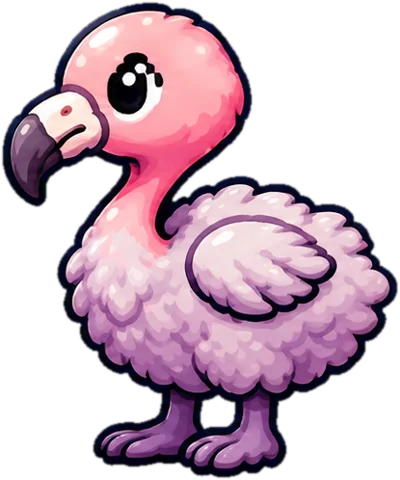

 Psychic
Psychic Wind
WindTap a stage to read its story.
Flumble is a dumpy pink fledgling whose stubby body seems too round for its thin legs. Its pale violet-pink down puffs outward in the dry desert breeze, making it look even rounder, and its small beak is already curved in the classic flamingo hook. It wanders the windswept dune-ridges where the psychic thermals lift loose sand into spirals, and it often gets its feet tangled chasing a gust. Despite the stumbling, it never tips over - something invisible seems to cushion it each time.
Field note: Flumble can sense the direction of the next sandstorm up to ten minutes before any grain of sand begins to move.
Sand Dunes. Flumble and its family are found in the Sand Dunes. See everyone who lives there.
Share a Bond Food that matches its types to become friends. Flumble loves:
A Bond Food is not a trick. It joins your spirit with the Kimuro's spirit, and only when it chooses you.
Print the Kimuro adventure packs: mazes, cards, a board game and Bond Mark medals.
See the printable packs